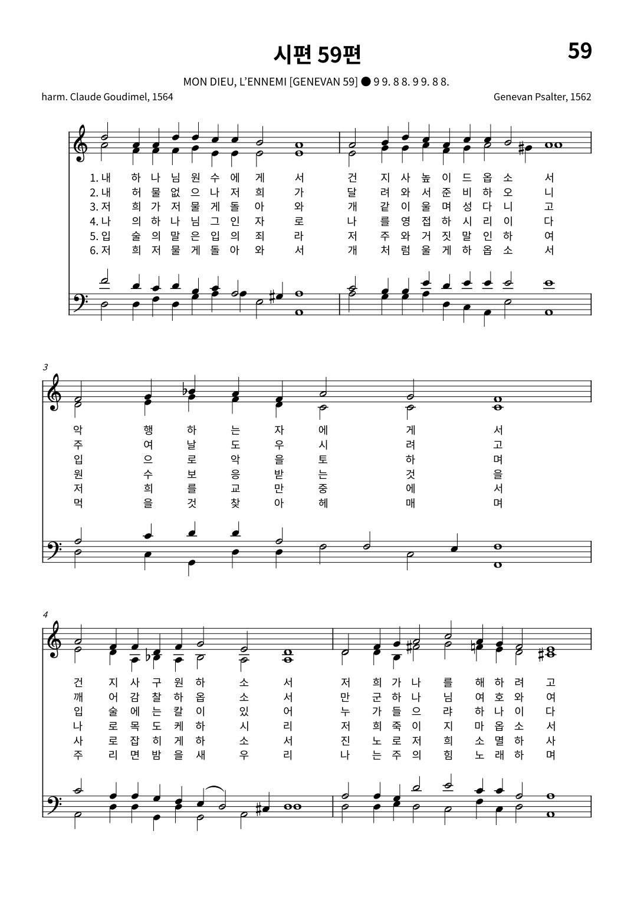

Psalm 59
MON DIEU, L’ENNEMI [GENEVAN 59] · 9 9. 8 8. 9 9. 8 8.
English title: Deliver Me, O God, I Pray Thee
Tune: Genevan Psalter, 1562 · Harmony: Claude Goudimel, 1564 · Lyrics: Korean adaptation of Psalm 59 from the Korean Revised Version (AI draft adaptation · not yet theologically reviewed) · 6 stanzas
Score PDF MusicXML (for printing) MusicXML (for accompaniment, with prelude and repeats) Read Psalm 59 (Korean Revised Version)
Score
← Psalm 58 ListAccompaniment (in preparation)Psalm 60 →
Lyrics (Korean)
Stanza 1 (Ps. 1~3절)
내 하나님 원수에게서
건지사 높이 드옵소서
악 행하는 자에게서
건지사 구원하소서
저희가 나를 해하려고
강한 자 모여 치려 하니
여호와여 내 범과나
죄 탓이 아니니이다
내 하나님 원수에게서
건지사 높이 드옵소서
악 행하는 자에게서
건지사 구원하소서
저희가 나를 해하려고
강한 자 모여 치려 하니
여호와여 내 범과나
죄 탓이 아니니이다
Stanza 2 (Ps. 4~5절)
내 허물 없으나 저희가
달려와서 준비하오니
주여 날 도우시려고
깨어 감찰하옵소서
만군 하나님 여호와여
이스라엘 하나님이여
일어나 열방 벌하사
악인을 용서 마소서
내 허물 없으나 저희가
달려와서 준비하오니
주여 날 도우시려고
깨어 감찰하옵소서
만군 하나님 여호와여
이스라엘 하나님이여
일어나 열방 벌하사
악인을 용서 마소서
Stanza 3 (Ps. 6~9절)
저희가 저물게 돌아와
개같이 울며 성 다니고
입으로 악을 토하며
입술에는 칼이 있어
누가 들으랴 하나이다
주는 저희를 웃으시며
열방을 비웃으시리
내 산성 주를 바라리
저희가 저물게 돌아와
개같이 울며 성 다니고
입으로 악을 토하며
입술에는 칼이 있어
누가 들으랴 하나이다
주는 저희를 웃으시며
열방을 비웃으시리
내 산성 주를 바라리
Stanza 4 (Ps. 10~11절)
나의 하나님 그 인자로
나를 영접하시리이다
원수 보응받는 것을
나로 목도케 하시리
저희 죽이지 마옵소서
백성 잊을까 하나이다
우리 방패 되신 주여
흩으시고 낮추소서
나의 하나님 그 인자로
나를 영접하시리이다
원수 보응받는 것을
나로 목도케 하시리
저희 죽이지 마옵소서
백성 잊을까 하나이다
우리 방패 되신 주여
흩으시고 낮추소서
Stanza 5 (Ps. 12~13절)
입술의 말은 입의 죄라
저주와 거짓말 인하여
저희를 교만 중에서
사로잡히게 하소서
진노로 저희 소멸하사
없기까지 소멸하시고
주의 야곱 다스리심
땅 끝 알게 하옵소서
입술의 말은 입의 죄라
저주와 거짓말 인하여
저희를 교만 중에서
사로잡히게 하소서
진노로 저희 소멸하사
없기까지 소멸하시고
주의 야곱 다스리심
땅 끝 알게 하옵소서
Stanza 6 (Ps. 14~17절)
저희 저물게 돌아와서
개처럼 울게 하옵소서
먹을 것 찾아 헤매며
주리면 밤을 새우리
나는 주의 힘 노래하며
아침에 인자 높이리니
주는 내 산성 피난처
긍휼의 하나님이라
저희 저물게 돌아와서
개처럼 울게 하옵소서
먹을 것 찾아 헤매며
주리면 밤을 새우리
나는 주의 힘 노래하며
아침에 인자 높이리니
주는 내 산성 피난처
긍휼의 하나님이라